Fotoner (lys)
Lys kommer i bølgepakker (fotoner), som både har bølge- og partikkelegenskaper.
Fargen på lyset avhenger av bølgelengden og frekvensen, slik simuleringen nedenfor viser.
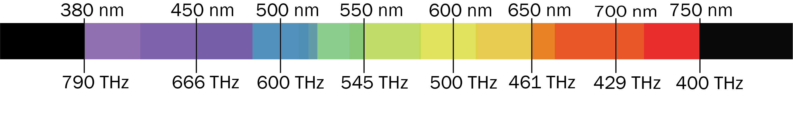
Sammenhengen mellom energien \(E_f\), bølgelengden \(\lambda\), frekvensen \(f\) og bevegelsesmengden \(p\) til et foton er
\[ E_f = \frac{hc}{\lambda} = hf = pc\]hvor \(h=6\text{,}63 \cdot 10^{-34} \text{ Js}\) kalles Planck's konstant.
Eksempel
En lommelykt sender ut lys med bølgelengde \(\lambda = 600\) nm. Effekten til lommelykta er 30 W.
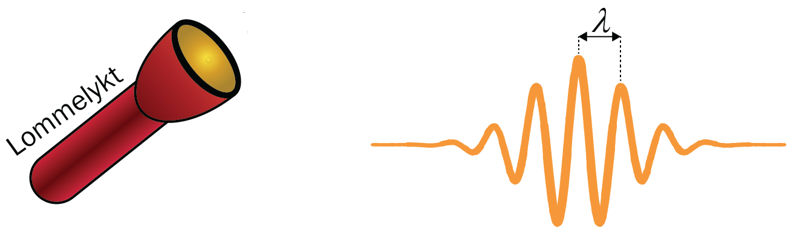
Bestem frekvensen til fotonene, og bestem hvor mange fotoner som sendes ut hvert sekund.
Fra likningen over får vi at frekvensen er
\[ f = \frac{c}{\lambda} = \frac{3\text{,}00 \cdot 10^8 \text{ m/s}}{600 \cdot 10^{-9} \text{ m}} = 5\text{,}00 \cdot 10^{14} \text{ Hz}\]Effekt på 30 W betyr 30 joule per sekund, og energien til ett foton er \[ E = hf = 6\text{,}63 \cdot 10^{-34} \text{ Js} \cdot 5\text{,}00 \cdot 10^{14} \text{ Hz} = 3\text{,}32 \cdot 10^{-19} \text{ J} \] som gir at antall fotoner blir \[ \frac{30 \text{ J per sekund}}{3\text{,}32 \cdot 10^{-19} \text{ J}} = 9\text{,}1 \cdot 10^{19} \text{ per sekund} \]
Fotoelektrisk effekt: Et foton absorberes av et metall, og et elektron spretter ut. Dette viser at fotoner (lys) har partikkelegenskaper.
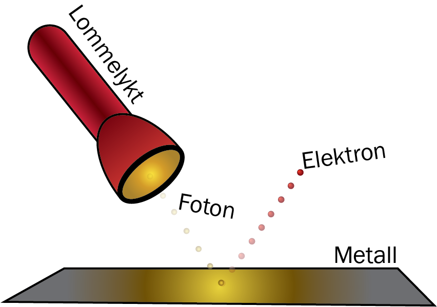
Den kinetiske energien \(E_k\) elektronene (maksimalt) får er gitt ved \[ E_k = E_f - W \] hvor \(E_f\) er fotonenergien og \(W\) er løsrivningsarbeidet til metallet.
Den minste frekvensen som kreves for å løsrive elektroner kalles grensefrekvensen til metallet.
Eksempel
I et forsøk måles sammenhengen mellom frekvensen \(f\) til fotonene som sendes inn mot en magnesiumplate, og den maksimale kinetiske energien til elektronene som løsrives.
Målepunktene i grafikkfeltet viser resultatene fra forsøket. Den stiplede linja viser en regresjon for punktene.
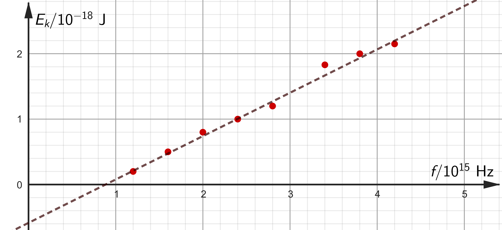
Bruk grafen til å bestemme løsrivningsarbeidet for magnesium, grensefrekvensen for magnesium og Planck's konstant.
Likningen til den rette linja er \( \overbrace{y}^{E_k} = \overbrace{a}^{h} \cdot \overbrace{x}^{f} + \overbrace{b}^{-W} \).
Skjæringen med \(y\)-aksen gir løsrivningsarbeidet: \(W = \underline{0\text{,}60 \cdot 10^{-18} \text{ J}}\).
Nullpunktet gir grensefrekvensen: \(f_g = \underline{0\text{,}90 \cdot 10^{15} \text{ Hz}}\).
Planck's konstant (stigningstallet) er \[ h = \frac{\Delta x}{\Delta y} = \frac{0\text{,}60 \cdot 10^{-18}}{0\text{,}90 \cdot 10^{15}} = \underline{6\text{,}7 \cdot 10^{-34} \text{ Js}} \]
MERK: Planck's konstant er i virkeligheten \(6\text{,}63 \cdot 10^{-34} \text{ Js}\), og løsrivningsarbeidet og grensefrekvensen for magnesium er henholdsvis \(0\text{,}586 \cdot 10^{-18} \text{ J}\) og \(0\text{,}885 \cdot 10^{15} \text{ Hz}\). Dermed stemmer resultatene fra forskøet ganske bra (men, som nesten alltid pga. usikkerheter i målingene, ikke helt).
Comptonstøt: Et foton (vekselvirker) kolliderer med et elektron på (omtrent) samme måte som to biljardkuler kolliderer.
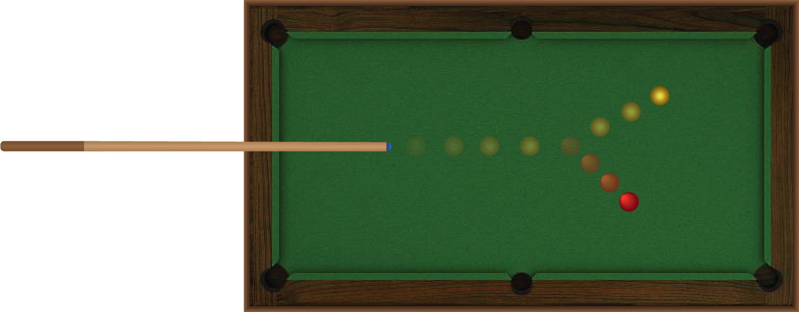
Dette viser at fotoner har partikkelegenskaper;Hvis fotonet hadde oppført seg som en bølge her, ville det bare tatt med seg elektronet rett framover.
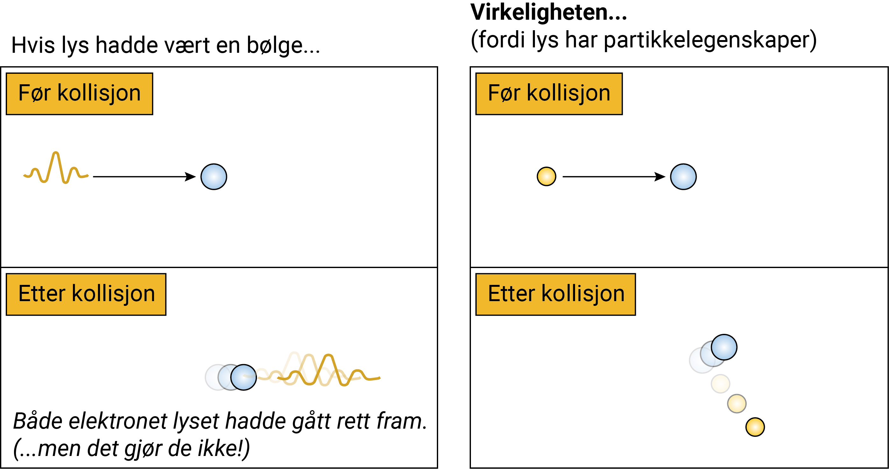
Eksempel
Et foton kolliderer med et elektron i ro. Før støtet har fotonet bølgelengde \(\lambda_1 = 0\text{,}80 \cdot 10^{-10}\) m. Fotonet etter kollisjonen har bølgelengde \(\lambda _2 = 1\text{,}00 \cdot 10^{-10}\) m.
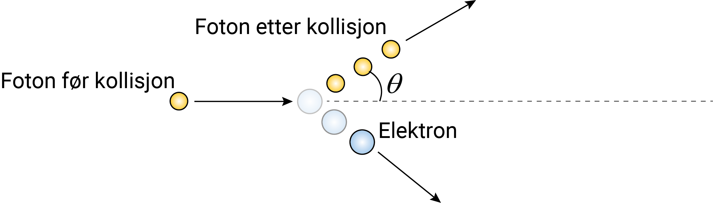
Bruk bevaring av energi og bevegelsesmengde til å vise at vinkelen \(\theta \neq 0\).
(Altså; Vis at fotonet og elektronet ikke går rett fram etter støtet)
Her må vi bruke sammenhengene mellom energi, bølgelengde og bevegelsesmengde for fotoner: \[ E_f = \frac{hc}{\lambda} = pc \]
Bevegelsesmengden til fotonet før og etter søtet er \[ p_1 = \frac{h}{\lambda_1} = \frac{6\text{,}63\cdot 10^{-34}}{0\text{,}80 \cdot 10^{-10}} = 8\text{,}29 \cdot 10^{-24} \text{ kg m/s} \;\;\; \text{ og } \;\;\; p_2 = \frac{h}{\lambda_2} = \frac{6\text{,}63\cdot 10^{-34}}{1\text{,}00 \cdot 10^{-10}} = 6\text{,}63 \cdot 10^{-24} \text{ kg m/s} \]
Energibevaring gir den kinetiske energien til elektronet: \[ E_k = \frac{hc}{\lambda_2} - \frac{hc}{\lambda_1} = \frac{6\text{,}63 \cdot 10^{-34} \cdot 3\text{,}00 \cdot 10^8}{0\text{,}80 \cdot 10^{-10}} - \frac{6\text{,}63 \cdot 10^{-34} \cdot 3\text{,}00 \cdot 10^8}{1\text{,}00 \cdot 10^{-10}} = 4\text{,}9725 \cdot 10^{-16} \text{ J} \]
Bevegelsesmengden til elektronet blir da \[ E_k = \frac{1}{2}mv^2 \;\; \text{og}\;\; p =mv \;\;\; \Rightarrow p = \sqrt{2mE_k} = \sqrt{2\cdot 9\text{,}11 \cdot 10^{-31} \cdot 4\text{,}9725 \cdot 10^{-16}} = 3\text{,}01 \cdot 10^{-23} \text{ kg m/s}\]
Hvis \(\theta =0\) får vi \[ \overbrace{8\text{,}29 \cdot 10^{-24} \text{ kg m/s}}^{\text{Bev.mengde før}} < \overbrace{6\text{,}63 \cdot 10^{-24} \text{ kg m/s} + 3\text{,}01 \cdot 10^{-23} \text{ kg m/s}}^{\text{Bev.mengde etter}}\] men bevegelsesmengden skal være den samme før og etter støtet.Dermed må noe av bevegelsesmengden etter støtet gå i \(y\)-retning, sånn at noe av bevegelsesmengden til fotonet og elektronet kansellerer hverandre ut. Dermed er \(\theta \neq 0\).
Bølgeegenskaper
Thomas Youngs dobbeltspalteforsøk: Når fotoner (lys) sendes gjennom en dobbeltspalte og treffer en vegg bak spalten, er det som om hvert foton er en bølge som går gjennom begge spalteåpningene.
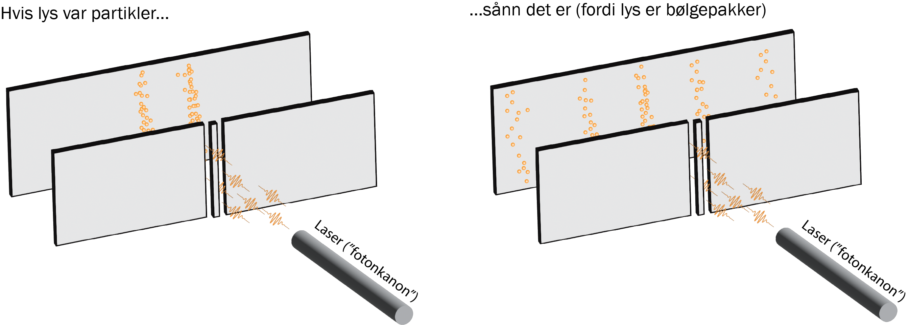
Når vi skal regne ut hvor det er mest sannsynlig at fotonene treffer veggen, ser vi på hvert foton som en vannbølge. Der bølgen fra spalteåpningene slår seg sammen, får vi en større bølge, som tilsvarer at det er mer sannsynlig at fotonet treffer veggen der. Dette er markert med prikkene på veggen i simuleringen nedenfor.
de Broglie-bølgelengde: Alle partikler har bølgeegenskaper, hvor sammenhengen mellom bølgelengden \(\lambda\) og bevegelsesmengden er \[ \lambda = \frac{h}{p} \] Bølgeegenskapene gjør seg gjeldene på liten skala; Hvis f.eks. spalteåpningene i dobbeltspalteforsøket er omtrent like store som bølgelengden.
Eksempel
Bestem bølgelengden til
- en fotball med masse 0,50 kg og fart 10 m/s.
- et elektron med fart 1000 m/s.
Vi kan ikke sende fotballer gjennom spalteåpninger på ca. \(1\text{,}3 \cdot 10^{-34}\) meter.
Bølgefunksjonen
Alle partikler har en bølgefunksjon \(\Psi\) som kan avhenge av posisjon og tid.
Figuren under viser hvordan en klassisk partikkel og en kvantepartikkel beveger seg bortover;
Den klassiske partikkelen har en bestemt posisjon ved hvert tidspunkt, mens kvantepartikkelen er en bølge, som endrer seg.
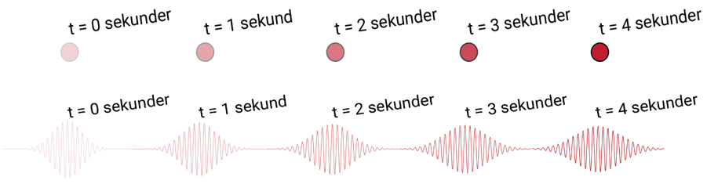
Kollaps av bølgefunksjonen: Hvis vi gjør en måling av posisjonen til kvantepartikkelen, f.eks. ved å la den kollidere med en vegg, "kollapser" bølgefunksjonen: Partikkelen er da plutselig på et bestemt sted, akkurat som den klassiske partikkelen.
Uskarphet i posisjon \(\Delta x\): Siden bølgefunksjonen er litt "smurt utover", sier vi at kvantepartikler har en uskarphet \(\Delta x\) i posisjonen sin. Dette er et matematisk mål på hvor mye bølgen er "smurt utover".
Sannsynlighetsfordeling: Det er mest sannsynlig å finne partikkelen der bølgen har størst utslag. Arealet under grafen til kvadratet av bølgefunksjonen, \(\Psi^2\), gir sannsynligheten for å finne partikkelen i intervallet vi ser på.
Eksempel
Figuren viser den kvadrerte bølgefunksjonen for en kvantepartikkel som det er mest sannsynlig å finne i nærheten av \(x=0\).
Arealet mellom grafen og \(x\)-aksen i intervallet \(x \in [-\Delta x, \Delta x]\) er 0,68.
Hva er sannsynligheten for å finne partikkelen i intervallet \(x \in [-\Delta x, \Delta x]\)?
Hva er sannsynligheten for å finne partikkelen utenfor dette intervallet?
Arealet gir sannsynligheten, så sannsynligheten for å finne den i intervallet \(x \in [-\Delta x, \Delta x]\) er 68 %.
Sannsynligheten for å finne partikkelen ett eller annet sted er 100 %, så dermed er sannsynligheten for finne partikkelen utenfor intervallet 32 %.
Heisenberg's uskarphetsrelasjon: Sammenhengen mellom uskarpheten i posisjon \(\Delta x\) og bevegelsesmengde \(\Delta p\) er \[ \Delta x \cdot \Delta p \geq \frac{h}{4\pi} \;\;\;,\;\;\text{ hvor }h = 6\text{,}63 \cdot 10^{-34} \text{ Js er Planck's konstant.}\] For frie fotoner er uskarphetsrelasjonen en likhet; Dermed øker \(\Delta p\) når \(\Delta x\) avtar, og vica verca, slik simuleringen under viser.
Eksempel
Et foton har bølgelengde \(\lambda = 550 \text{ nm}\) og en uskarphet i posisjon på \(\Delta x = 300 \text{ nm}\)
Bestem bevegelsesmengden til fotonet, og den minste mulige uskarpheten til bevegelsesmengden.
Sammenhengen mellom bølgelengde og bevegelsesmengde gir \[ p = \frac{h}{\lambda} = \frac{6\text{,}63 \cdot 10^{-34}}{550 \cdot 10^{-9}} = 1\text{,}21 \cdot 10^{-27} \text{ kg m/s} \] Heisenberg's uskarphetsrelasjon gir \[ \Delta x \cdot \Delta p \geq \frac{h}{4\pi} \;\;\; \Rightarrow \;\;\; \Delta p \geq \frac{h}{4\pi \cdot \Delta x} = \frac{6\text{,}63 \cdot 10^{-34}}{4\pi \cdot 300 \cdot 10^{-9}} = 1\text{,}76 \cdot 10^{-28} \text{ kg m/s} \]
Kvantisering og tunnelering
Kvantisering: I mange situasjoner er bølgefunksjonen og energien til en partikkel kvantisert. Det mest kjente eksempelet på dette er kvantiseringen av elektronbanene rundt hydrogenkjernen.
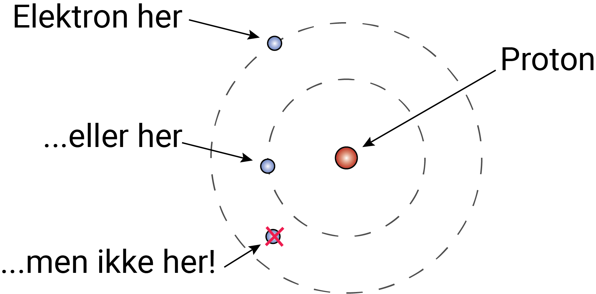
Partikkel i boks: Når en partikkel, f.eks. et elektron, er sperret inne i en boks, kvantiseres bølgefunksjonen slik simuleringen nedenfor viser. Bølgefunksjonen er null i kantene, og det er et helt antall halve bølgelengder mellom veggene.
Eksempel
Et elektron er sperret inne i en boks med lengde \(10^{-10}\) meter.
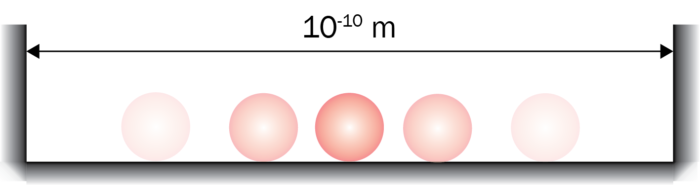
Bølgefunksjonen er da gitt ved \[ \Psi(x) = \sqrt{2} \sin\left(n \cdot \pi \cdot x\right) \] hvor posisjonen \(x\) måles i \(10^{-10}\) meter, og hvor \(n\) er et posistivt heltall.
Tegn bølgen for \(n\) = 4, og bestem sannsynligheten for å finne elektronet mellom \(x=0\text{,}25\) og \(x=0\text{,}75\).
Når \(n=4\) blir bølgefunksjonen \[ \Psi(x) = \sqrt{2} \sin\left(4\pi \cdot x\right) \] og bølgelengden er da \(\lambda = \frac{2\pi}{4\pi} = 0\text{,}50\), noe som gir denne grafen:
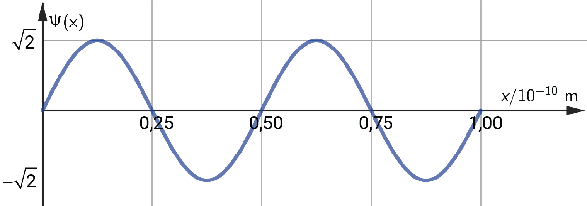
Vi ser at halvparten av arealet ligger mellom \(x=0\text{,}25\) og \(x=0\text{,}75\).Dermed er sannsynligheten 50 % for å finne elektronet mellom \(x=0\text{,}25\) og \(x=0\text{,}75\).
Tunnelering: Hvis det ikke kreves uendelig mye energi å komme seg fri, er det mulig for en kvantepartikkel å komme seg gjennom en sperring,
selv om partikkelen ifølge klassisk fysikk ikke kan komme seg fri.
Tunnelering kan illustreres med en kvantepartikkel som er sperret inne i en boks, hvor mesteparten av bølgefunksjonen er i boksen, men hvor litt av bølgefunksjonen er på utsiden:
Det er en liten sannsynlighet for at vi finner partikkelen på utsiden.
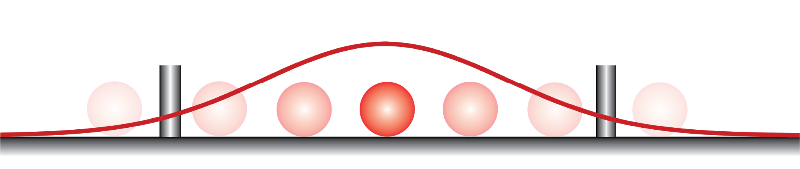
Eksempel
En polonium-kjerne kan sende ut en helumkjerne.
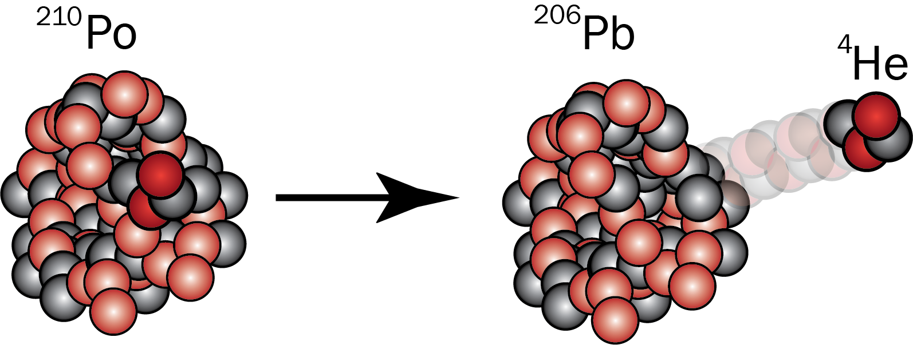
Ifølge klassisk fysikk har ikke heliumkjernen nok energi til å "rive seg løs" fra den tyngre atomkjernen, men fordi det ikke kreves uendelig mye energi, gir tunneleringseffekten i kvantefysikken at det er en viss sannsynlighet for at den kommer seg fri.